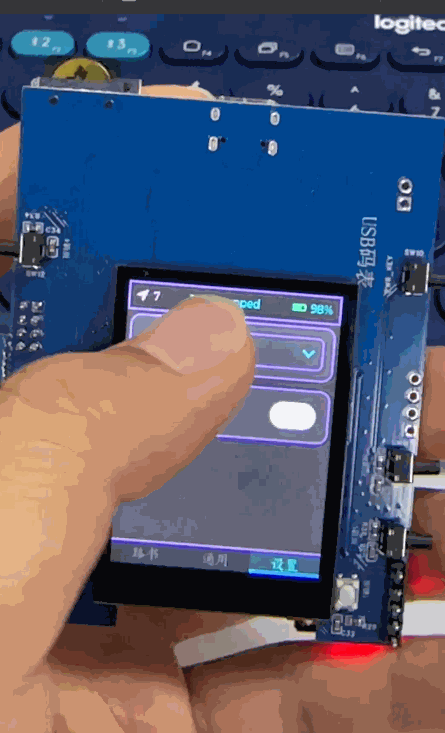
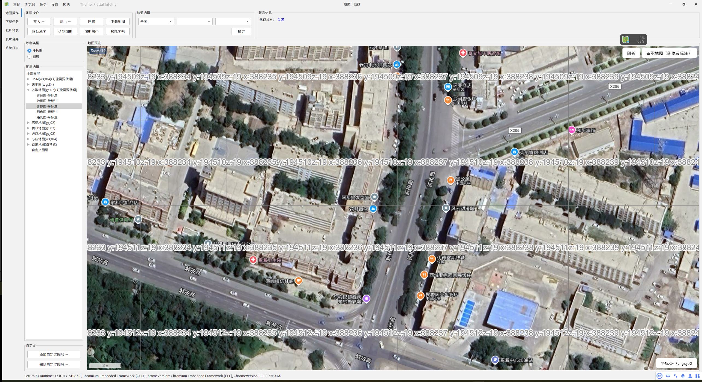
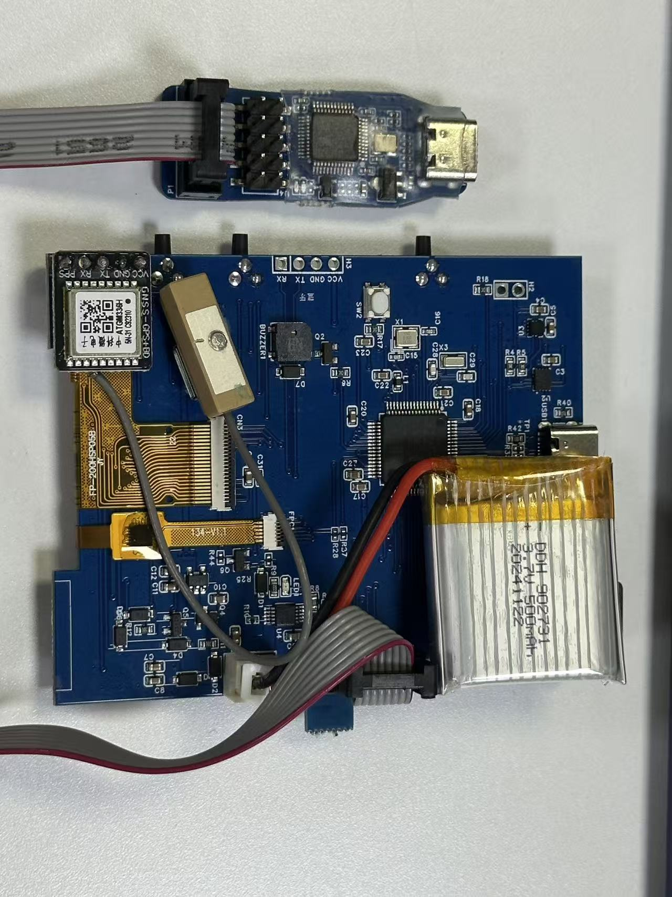
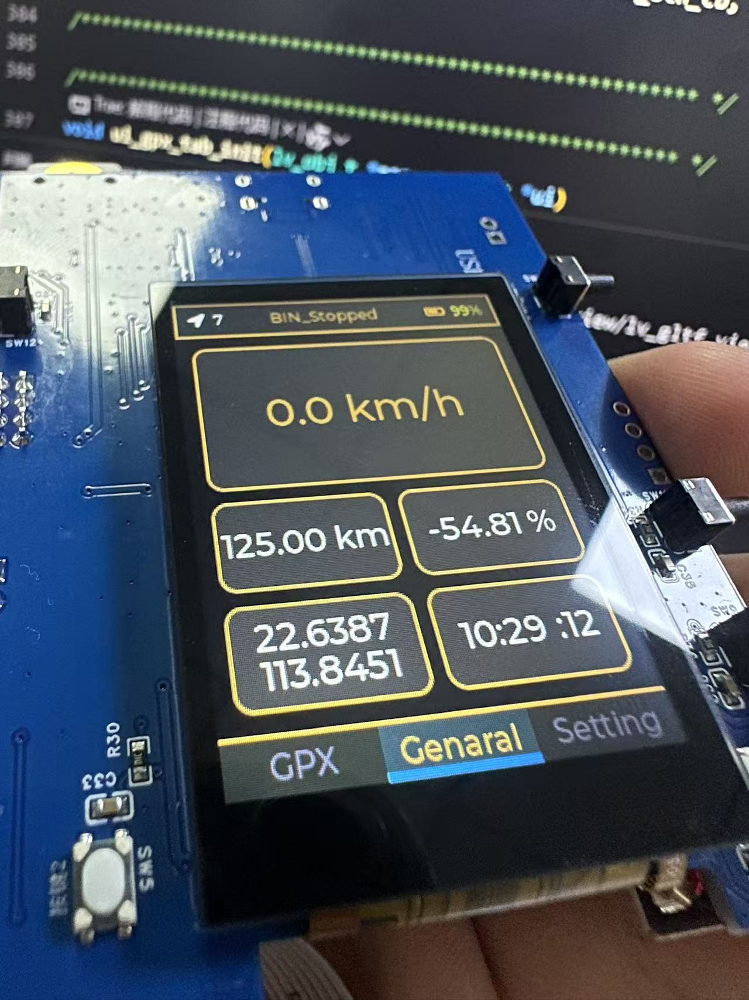

🚲 STM32 + LVGL 智能自行车码表
全栈嵌入式实践 | 从底层驱动到图形界面开发复盘
🚀 核心亮点

中英文静态翻译无缝切换

深色/浅色模式动态重绘UI
⚙️ 功能与架构
主要功能
- 基础交互：基于 LVGL 实现彩色 UI。
- 本地化支持：中英文切换 & 深浅模式实时切换。
- 骑行数据：实时显示速度、电量、卫星数等。
- 地图导航：支持局部 GPS 地图滚动与路书。
硬件选型
- 主控：STM32F405 / STM32H750
- 屏幕：240*320 TFT (ST7789) + 电容触摸 (CST)
- 传感器：ATGM336H (GPS) + LSM6DSM (陀螺仪)
- 供电：3.7V 500mAh 三元锂电池
🔥 技术难点与解决方案
难点一：地图动态铺设与性能瓶颈
实现地图滚动需采用“九宫格”加载机制。单张 256x256 图片在 30Hz 刷新率下需 3MB/s 吞吐量。F405 CPU 直接推屏卡顿。
解决方案： 在硬件端利用 DMA2D 硬件图形加速器 搬运数据，彻底解放 CPU，实现丝滑滑动。
难点二：数据绑定的线程安全
在定时器中断 (timer_handler) 中直接修改 UI 数据会导致 HardFault。
解决方案： 引入 lv_async_call() 机制；或使用 FreeRTOS 的互斥锁（Mutex）严格控制时序。
💻 PC 模拟器开发阶段
脱离硬件束缚，前期 90% 的交互逻辑在 PC 模拟器完成验证。

设置功能页面

通用数据监测页

地图数据处理工具链
🛠️ 硬件移植与最终成品

内部电路板与排线布局

硬件实机效果 (黑金模式)